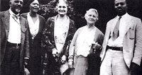

Founded February 12, 1909, the NAACP is the nation’s oldest, largest and most widely recognized civil rights organization. Its more than half-million members and supporters throughout the United States and the world are the premier advocates for civil rights in their communities, leading grassroots campaigns for equal opportunity and conducting voter mobilization.
Founding group
In 1908, a deadly race riot rocked the city of Springfield, the capital of Illinois and resting place of President Abraham Lincoln. Such eruptions of anti-black violence – particularly lynching – were horrifically commonplace, but the Springfield riot was the final tipping point that led to the creation of the NAACP. Appalled at this rampant violence, a group of white liberals that included Mary White Ovington and Oswald Garrison Villard (both the descendants of famous abolitionists), William English Walling and Dr. Henry Moscowitz issued a call for a meeting to discuss racial justice. Some 60 people, seven of whom were African American (including W. E. B. Du Bois, Ida B. Wells-Barnett, and Mary Church Terrell), signed the call, which was released on the centennial of Lincoln’s birth.
Echoing the focus of Du Bois’ Niagara Movement for civil rights, which began in 1905, the NAACP’s aimed to secure for all people the rights guaranteed in the 13th, 14th, and 15th Amendments to the United States Constitution, which promised an end to slavery, the equal protection of the law, and universal adult male suffrage, respectively. Accordingly, the NAACP’s mission was and is to ensure the political, educational, social and economic equality of minority group citizens of United States and eliminate race prejudice. The NAACP seeks to remove all barriers of racial discrimination through democratic processes.
The NAACP established its national office in New York City in 1910 and named a board of directors as well as a president, Moorfield Storey, a white constitutional lawyer and former president of the American Bar Association. Other early members included Joel and Arthur Spingarn, Josephine Ruffin, Mary Talbert, Inez Milholland, Jane Addams, Florence Kelley, Sophonisba Breckinridge, John Haynes Holmes, Mary McLeod Bethune, George Henry White, Charles Edward Russell, John Dewey, William Dean Howells, Lillian Wald, Charles Darrow, Lincoln Steffens, Ray Stannard Baker, Fanny Garrison Villard, and Walter Sachs. Despite a foundational commitment to multiracial membership, Du Bois was the only African American among the organization’s original executives. He was made director of publications and research and in 1910 established the official journal of the NAACP, The Crisis.
The Crisis
The Crisis
W.E.B. Du Bois founded The Crisis magazine in 1910 as the premier crusading voice for civil rights. Originally subtitled, “A Record of the Darker Races,” The Crisis was a groundbreaking outlet for discussing critical issues confronting the African American community and sharing the intellectual and artistic work of people of color. In its first decade, The Crisis focused on vital issues like lynching and World War I. From 1920-1921, Du Bois also published a children’s edition of The Crisis, called The Brownies’ Book, the first periodical exclusively for black youth in American history.
In time, The Crisis became a voice of the Harlem Renaissance, as Du Bois published works by Langston Hughes, Countee Cullen and other famous African American literary figures. In 1928, expanding the magazine’s artistic reach, Du Bois founded Krigwa Players (CRIGWA: Crisis Guild of Writers and Artists) to foster theater production about, by, for, and near the African American community.
Now published quarterly, The Crisis remains the official publication of the NAACP and is the NAACP’s articulate partner in the struggle for human rights for people of color. A respected journal of thought, opinion and analysis, The Crisis continues to explore past and present issues concerning race and its impact on educational, economic, political, social, moral, and ethical issues. In addition, each issue is highlighted with a special section, “The NAACP Today” reporting the news and events of the NAACP on a local and national level.
A Period of Growth
By 1913, with a strong emphasis on local organizing, the NAACP had established branch offices in such cities as Boston, MA, Baltimore, MD, Kansas City, MO, St. Louis, MO, Washington, D.C., and Detroit, MI. NAACP membership grew rapidly, from around 9,000 in 1917 to around 90,000 in 1919, with more than 300 local branches.
Joel Spingarn, a professor of literature and one of the NAACP founders formulated much of the strategy that fostered much of the organization’s growth. He was elected board chairman of the NAACP in 1915 and served as president from 1929-1939. Writer and diplomat James Weldon Johnson became the Association’s first black executive secretary in 1920, and Louis T. Wright, a surgeon, was named the first black board chairman in 1934.
A series of early court battles, including a victory against a discriminatory Oklahoma law that regulated voting by means of a grandfather clause (Guinn v. United States, 1910), helped establish the NAACP’s importance as a legal advocate. The fledgling organization also learned to harness the power of publicity through its 1915 battle against D. W. Griffith’s inflammatory Birth of a Nation, a motion picture that perpetuated demeaning stereotypes of African Americans and glorified the Ku Klux Klan.
Among the Association’s top priorities was eradicating lynching. Throughout its 30-year campaign, the NAACP waged legislative battles, gathered and published crucial statistics, organized mass protests, and produced artistic material all in the name of bringing an end to the violence. After early worries about its constitutionality, the NAACP strongly supported the federal Dyer Bill, which would have punished those who participated in or failed to prosecute lynch mobs. Though the U.S. House of Representatives passed the bill, a Senate filibuster defeated it for good in 1922. Despite repeated opportunities in years to follow, such as the Costigan-Wagner Bill, Congress never passed any anti-lynching legislation. Many credit the NAACP report “Thirty Years of Lynching in the United States, 1889-1919” and the public debate that followed with drastically decreasing the incidence of lynching.
In 1930, Walter F. White succeeded Johnson as executive secretary. White was instrumental not only in his research on lynching (in part because, as a very fair-skinned African American, he had been able to infiltrate white groups), but also in his successful block of segregationist Judge John J. Parker’s nomination by President Herbert Hoover to the U.S. Supreme Court.
White presided over the NAACP’s most productive period of legal advocacy. In 1930 the association commissioned the Margold Report, which became the basis for the successful reversal of the separate-but-equal doctrine that had governed public facilities since Plessy v. Ferguson (1896). In 1935, White recruited Charles H. Houston as NAACP chief counsel. Houston was the Howard University law school dean whose strategy on school-segregation cases paved the way for his protégé Thurgood Marshall to prevail in 1954’s Brown v. Board of Education, the decision that overturned Plessy.
During the Great Depression of the 1930s, which was disproportionately disastrous for African Americans, the NAACP began to focus on economic justice. After years of tension with white labor unions, the Association cooperated with the newly formed Congress of Industrial Organizations in an effort to win jobs for black Americans. White, a friend and adviser to First Lady – and NAACP national board member – Eleanor Roosevelt, met with her often in attempt to convince President Franklin D. Roosevelt to outlaw job discrimination in the armed forces, defense industries, and the agencies created by the New Deal.
Roosevelt ultimately agreed to open thousands of jobs to black workers when labor leader A. Philip Randolph, in collaboration with the NAACP, threatened a national March on Washington movement in 1941. President Roosevelt also set up a Fair Employment Practices Committee (FEPC) to ensure compliance.
Throughout the 1940s, the NAACP saw enormous growth in membership, recording roughly 600,000 members by 1946. It continued to act as a legislative and legal advocate, pushing for a federal anti-lynching law and for an end to state-mandated segregation.
Civil Rights Era
By the 1950s the NAACP Legal Defense and Educational Fund, headed by Marshall, secured the last of these goals through Brown v. Board of Education (1954), which outlawed segregation in public schools. The NAACP’s Washington, D.C., bureau, led by lobbyist Clarence M. Mitchell Jr., helped advance not only integration of the armed forces in 1948 but also passage of the Civil Rights Acts of 1957, 1964, and 1968 and the Voting Rights Act of 1965.
Despite such dramatic courtroom and congressional victories, the implementation of civil rights was a slow, painful, and oft times violent process. The unsolved 1951 murder of Harry T. Moore, an NAACP field secretary in Florida whose home was bombed on Christmas night, and his wife was just one of many crimes of retribution against the NAACP and its staff and members. NAACP Mississippi field secretary Medgar Evers and his wife Myrlie also became high-profile targets for pro-segregationist violence and terrorism. In 1962, their home was firebombed and later Medgar was assassinated by a sniper in front of their residence. Violence also met black children attempting to enter previously segregated schools in Little Rock, Arkansas, and other southern cities.
The Civil Rights Movement of the 1950s and 1960s echoed the NAACP’s goals, but leaders such as Martin Luther King Jr., of the Southern Christian Leadership Conference, felt that direct action was needed to obtain them. Although the NAACP was criticized for working too rigidly within the system, prioritizing legislative and judicial solutions, the Association did provide legal representation and aid to members of other protest groups over a sustained period of time. The NAACP even posted bail for hundreds of Freedom Riders in the ‘60s who had traveled to Mississippi to register black voters and challenge Jim Crow policies.
Led by Roy Wilkins, who succeeded Walter White as secretary in 1955, the NAACP collaborated with A. Philip Randolph, Bayard Rustin and other national organizations to plan the historic 1963 March on Washington. The following year, the Association accomplished what seemed an insurmountable task: the Civil Rights Act of 1964.
Assisting the NAACP throughout the years were many celebrities and well-known leaders, including Sammy Davis Jr., Lena Horne, Jackie Robinson, Harry Belafonte. As an NAACP director of branches, Ella Baker stressed the importance of young people and women in the organization by recruiting members, raising money, and organizing local campaigns. Daisy Bates served as an NAACP national board member, Arkansas state conference president and advisor to the Little Rock Nine. NAACP stalwart Kivie Kaplan, a businessman and philanthropist from Boston, served as president of the NAACP from 1966 until 1975, personally led nationwide NAACP Life Membership efforts, and fought to keep African Americans away from illegal drugs.
Close of First Century
As de facto racial segregation remained and job discrimination lingered and urban poverty and crime increased, NAACP advocacy and action remained critical for the African American community.
In 1977, Wilkins retired and was replaced by Benjamin L. Hooks – the first leader of the NAACP to be titled “executive director” instead of “executive secretary.” During his fifteen year term, Dr. Hooks implemented many NAACP programs that continue today, such as Women in the NAACP and NAACP ACT-SO (Academic, Cultural, Technological and Scientific Olympics) competitions. Additionally, his term included the Bakke case (1978), in which a California court outlawed several aspects of affirmative action.
In the 1990s, the NAACP struggled to find a leader who could replace the prolific Dr. Hooks. In 1993, Benjamin F. Chavis (now Chavis Muhammad) became executive director/CEO. In 1995, Myrlie Evers-Williams (widow of Medgar Evers) became the third woman to chair the NAACP, a position she held until she was succeeded by Chairman Emeritus Julian Bond in 1998. In 1996, the National Board of Directors selected Kweisi Mfume, a former congressman and head of the Congressional Black Caucus, to serve as president and CEO. In doing so, the board changed the name of the leadership position once more and eliminated the elected office of president.
The New Millennium
The NAACP entered the 21st century reinvigorated and, in 2000, launched a massive get-out-the-vote campaign. As a result, 1 million more African Americans cast their ballots in the 2000 presidential election than in 1996.
The NAACP’s initiatives for the 21st century can best be summarized by its six “Game Changers”: economic sustainability, education, health, public safety and criminal justice, voting rights and political representation, and expanding youth and young adult engagement.
Recent leaders have included Bruce S. Gordon, Benjamin Todd Jealous, Dennis Courtland Hayes, and Cornell William Brooks. Presently, Derrick Johnson serves as President and CEO, and Leon W. Russell serves as chairman of the National Board of Directors.
***
Yet the real story of the nation’s oldest and largest civil rights organization lies in the hearts and minds of all those who refused to stand idly while race prejudice tarnished our nation. From bold investigations of mob brutality, protests of mass murders, segregation and discrimination, to testimony before congressional committees on the vicious tactics used to bar African Americans from the ballot box, it was the talent and tenacity of NAACP members that saved lives and made change.
While much of NAACP history is chronicled in books, articles, pamphlets, and magazines, the true movement lies in the faces of the multiracial, multigenerational army of ordinary men and women who united to awaken the consciousness of a people and a nation. With such a powerful membership base, all 2,200 chapters of the Association continue to persevere. Together, the NAACP will remain vigilant in its mission until the promise of America is made real for all Americans.